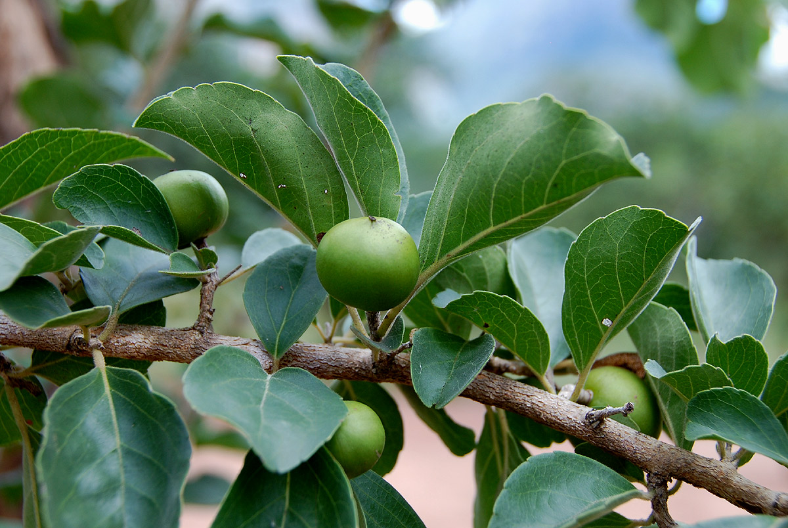

Overview
The plant is known as Vikankata and is commonly referred to as Madagascar Plum.
Botanical Name
Flacourtia indica L.Herit
Family
Flacourtiaceae
Regional Names
- Punjabi: Kingaro, Sherwam
- Gujarati: Vikalo
- Hindi: Baichi, Kantai
- Malayalam: Konoron
- Tamil: Kunaru, Sottaikala
- Telugu: Kanavegu Chettu
- English: Madagascar Plum, Governor's Plum
Classification (Gana)
Aacharya Charaka: Phala Varga
Bhavprakash Nighantu: Aamradiphala Varga
Raja Nighantu: Prabhadradi Varga
External Morphology
A perennial herb
Useful Parts
Important Phytoconstituents
- Phenolic Glucoside Ester
- Flacourtin
- Tannins
- Sucrose
- Protein
Rasa Panchak
- Rasa: Amla, Madhura
- Guna: Laghu
- Virya: Shita
- Vipaka: Madhur
Action
Vatapittahara
Therapeutic Indications
- Deepan: Increases appetite
- Pachana: Digestive
- Plihaghna: Treats splenomegaly
- Raktavikarahara: Blood purifier
- Kamlahara: Treats jaundice
Therapeutic Uses
- Kamla: Stem bark decoction is very useful in jaundice and splenomegaly.
- Sarpavisha: Root paste is applied over the area of the snake bite.
- Sotha: Decoction of bark and root is given in inflammation in arthritis.
Dose
- Fresh Juice: 10-20 ml
- Decoction: 40-80 ml
Formulations
Adverse Effect
Not Known
Remedial Measures
Not Required